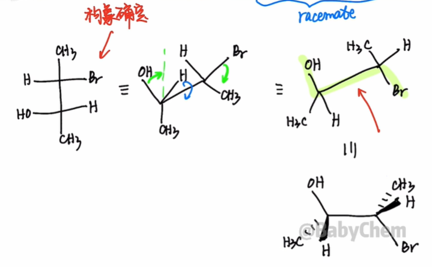
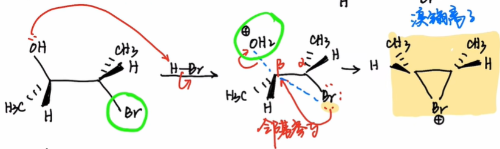
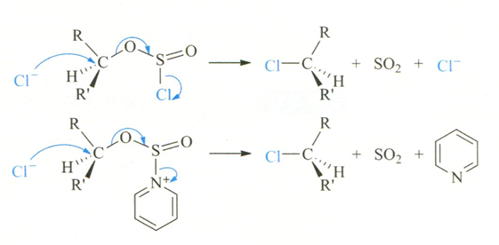
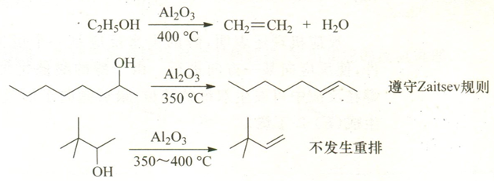
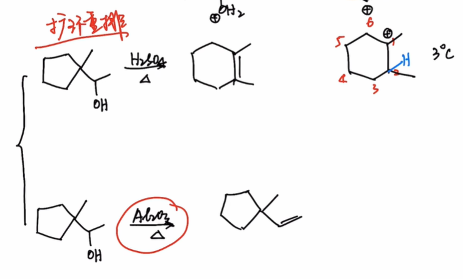

<meta data-alternate="https://freshmark.sunisalex.org/en/posts/chemistry/babychem/alcohol-to-halide-conversion-and-alcohol-elimination/" data-article="true" data-canonical="https://freshmark.sunisalex.org/posts/chemistry/babychem/alcohol-to-halide-conversion-and-alcohol-elimination/" data-description="本文是【基础有机化学 L9-3 补充你的知识盲区，你真的理解醇的取代和消除反应吗？】的学习笔记" data-freshmark-page data-title="基础有机化学 L9-3 — Freshmark"><main><header class="container article-header"><a href="/" class="back-link">← 返回全部文章</a><p class="eyebrow article-subject">化学</p><h1>基础有机化学 L9-3</h1><p class="article-dek">本文是【基础有机化学 L9-3 补充你的知识盲区，你真的理解醇的取代和消除反应吗？】的学习笔记</p><div class="article-meta"><time datetime="2026-07-09">2026年7月9日</time><span>2 分钟阅读</span><span>有机化学 · 化学竞赛</span><span class="view-count" data-article-view-count hidden>本文访问量 <strong data-article-views></strong></span><a href="index.md" download>下载 Markdown</a><button type="button" class="article-share" data-share-article data-share-text="本文是【基础有机化学 L9-3 补充你的知识盲区，你真的理解醇的取代和消除反应吗？】的学习笔记" data-share-title="基础有机化学 L9-3"><span data-share-label>分享文章</span></button><output aria-live="polite" class="visually-hidden" data-share-status role="status"></output></div></header><div class="article-wrap"><aside class="toc"><div class="toc-head"><p>本文目录</p><button type="button" class="toc-toggle" aria-expanded="false" aria-label="展开或收起目录" data-toc-toggle><span class="toc-toggle-label">目录</span><span class="toc-toggle-icon" aria-hidden="true"></span></button></div><nav aria-label="目录" class="toc-links" data-toc-links><a href="#parti醇的取代" class="toc-level-1">PartI:醇的取代</a><a href="#roh-hx" class="toc-level-2">ROH + HX</a><a href="#邻基参与效应" class="toc-level-3">邻基参与效应</a><a href="#roh-pbr3" class="toc-level-2">ROH + PBr3</a><a href="#roh-socl2" class="toc-level-2">ROH + SOCl2</a><a href="#roh-tscl" class="toc-level-2">ROH + TsCl</a><a href="#partii醇的消除" class="toc-level-1">PartII:醇的消除</a><a href="#扩环重排" class="toc-level-2">扩环重排</a><a href="#practice" class="toc-level-2">Practice</a></nav></aside><article class="prose"><p>本文是<a href="https://www.bilibili.com/video/BV1Pq4y1u7kE/?share_source=copy_web&amp;vd_source=8df86ec0f66b0d7c70b7414a1a60bc6a">【基础有机化学 L9-3 补充你的知识盲区，你真的理解醇的取代和消除反应吗？】</a>的学习笔记</p><!--more--><h1 id="parti醇的取代">PartI:醇的取代</h1><h2 id="roh-hx">ROH + HX</h2><p><picture class="responsive-picture"><source srcset="image.freshmark-f6305d74a262-480w.avif 480w, image.freshmark-f6305d74a262-710w.avif 710w" type="image/avif"><source srcset="image.freshmark-f6305d74a262-480w.webp 480w, image.freshmark-f6305d74a262-710w.webp 710w" type="image/webp"></picture>结论:</p><ol><li>机理:羟基变氧鎓离子(水是好的离去基团)</li><li>小位阻一级醇,否则<span class="math-expression math-inline" data-math-source="S_{N1}"></span>会重排</li><li>醇反应性:烯丙型,苯甲型,3°&gt;2°&gt;1°</li><li>氢卤酸反应性:<span class="math-expression math-inline" data-math-source="\ce{HI\gt HBr\gt HCl}"></span>&#32;<picture class="responsive-picture"><source srcset="image-1.freshmark-d18f6e7bde98-480w.avif 480w, image-1.freshmark-d18f6e7bde98-855w.avif 855w" type="image/avif"><source srcset="image-1.freshmark-d18f6e7bde98-480w.webp 480w, image-1.freshmark-d18f6e7bde98-855w.webp 855w" type="image/webp"></picture></li></ol><h3 id="邻基参与效应">邻基参与效应</h3><p><picture class="responsive-picture"><source srcset="image-2.freshmark-6da2d08fa3c8-480w.avif 480w, image-2.freshmark-6da2d08fa3c8-704w.avif 704w" type="image/avif"><source srcset="image-2.freshmark-6da2d08fa3c8-480w.webp 480w, image-2.freshmark-6da2d08fa3c8-704w.webp 704w" type="image/webp"></picture></p><p>为了解释外消旋体产物和更快的反应速率,联系Br原子的三对孤对电子,人们提出了邻基参与效应.</p><p><picture class="responsive-picture"><source srcset="image-3.freshmark-0decc293b6da-480w.avif 480w, image-3.freshmark-0decc293b6da-719w.avif 719w" type="image/avif"><source srcset="image-3.freshmark-0decc293b6da-480w.webp 480w, image-3.freshmark-0decc293b6da-719w.webp 719w" type="image/webp"></picture></p><p>邻基参与对立体化学的要求:反式共平面</p><p>溴原子的孤对电子,填入碳氧键的反键轨道,引发水的离去,形成<strong>溴鎓离子</strong>.</p><p><picture class="responsive-picture"><source srcset="image-4.freshmark-92e532f7cfcf-480w.avif 480w, image-4.freshmark-92e532f7cfcf-823w.avif 823w" type="image/avif"><source srcset="image-4.freshmark-92e532f7cfcf-480w.webp 480w, image-4.freshmark-92e532f7cfcf-823w.webp 823w" type="image/webp"></picture></p><p>接下来,溴鎓离子受到<span class="math-expression math-inline" data-math-source="\ce{Br-}"></span>的进攻开环,且左右的进攻等可能,故生成两种手性比50:50的<strong>外消旋体(racemate)</strong>.</p><p><picture class="responsive-picture"><source srcset="image-5.freshmark-0c293405c613-480w.avif 480w, image-5.freshmark-0c293405c613-498w.avif 498w" type="image/avif"><source srcset="image-5.freshmark-0c293405c613-480w.webp 480w, image-5.freshmark-0c293405c613-498w.webp 498w" type="image/webp"></picture></p><h2 id="roh-pbr3">ROH + PBr3</h2><p><span class="math-expression math-display" data-math-source="\begin{gathered} \ce{3ROH + PX3 -&gt; 3RX + H3PO3}\\ \ce{ROH + PX5 -&gt; RX + POX3 + HX} \end{gathered}" data-math-display></span> P是第三周期元素,故<span class="math-expression math-inline" data-math-source="\ce{PBr3}"></span>中P原子有3d轨道,可以被羟基的氧孤对电子进攻,让羟基变成好的离去基团,并且产生亲核试剂<span class="math-expression math-inline" data-math-source="\ce{Br-}"></span>.</p><blockquote><p>本节由 Claude（Anthropic 开发的 AI 模型）补充，附在作者解答之后，并非原作者所写。</p></blockquote><p><strong>更正（Claude 补充）</strong> 用&quot;P 有 3d 轨道&quot;来解释这一步，是较早的说法。计算化学表明，第三周期元素的 3d 轨道能量太高，几乎不参与成键。实际过程是：醇氧作为亲核试剂进攻 P，<strong>取代下一个 <span class="math-expression math-inline" data-math-source="\ce{Br-}"></span></strong>（P 仍是三配位，不需要扩展八隅体），生成 <span class="math-expression math-inline" data-math-source="\ce{RO-PBr2H+}"></span>；然后 <span class="math-expression math-inline" data-math-source="\ce{Br-}"></span>&#32;从背面以 <span class="math-expression math-inline" data-math-source="S_N2"></span>&#32;进攻碳，<span class="math-expression math-inline" data-math-source="\ce{HOPBr2}"></span>&#32;离去。这也解释了为什么手性二级醇用 <span class="math-expression math-inline" data-math-source="\ce{PBr3}"></span>&#32;溴化时构型翻转。</p><p>另外，下文&quot;区域选择性&quot;中的 Hoffmann 应为 <strong>Hofmann</strong>（霍夫曼规则）。</p><p><picture class="responsive-picture"><source srcset="image-6.freshmark-a65e0d62037a-480w.avif 480w, image-6.freshmark-a65e0d62037a-826w.avif 826w" type="image/avif"><source srcset="image-6.freshmark-a65e0d62037a-480w.webp 480w, image-6.freshmark-a65e0d62037a-826w.webp 826w" type="image/webp"></picture>结论:</p><ol><li>氯化:<span class="math-expression math-inline" data-math-source="\ce{PCl3}/\ce{PCl5}"></span>&#32;溴化:<span class="math-expression math-inline" data-math-source="\ce{PBr3}"></span>(五溴化磷不稳定) 碘化:<span class="math-expression math-inline" data-math-source="\ce{P + I2}"></span></li><li>主要用于1°,2°</li><li>低温避免重排</li></ol><h2 id="roh-socl2">ROH + SOCl2</h2><p><span class="math-expression math-display" data-math-source="\ce{ROH + SOCl2 -&gt;[\triangle] SO2 ^ + HCl ^ + RCl}" data-math-display></span></p><p>反应优点:直接得到氯代烷,条件温和,速率快,产率高,产物易于提纯.</p><p>反应前后醇的构型保持,并且低温下可以分离出氯代亚硫酸酯,经加热分解为氯代烷和<span class="math-expression math-inline" data-math-source="\ce{SO2}"></span>,这表明反应机理是:</p><p><picture class="responsive-picture"><source srcset="image-7.freshmark-abbbc8fe13a3-480w.avif 480w, image-7.freshmark-abbbc8fe13a3-742w.avif 742w" type="image/avif"><source srcset="image-7.freshmark-abbbc8fe13a3-480w.webp 480w, image-7.freshmark-abbbc8fe13a3-742w.webp 742w" type="image/webp"></picture></p><p>反应过程中先生成氯代亚硫酸酯,然后分解为紧密离子对,<span class="math-expression math-inline" data-math-source="\ce{Cl-}"></span>作为离去基团(LG)中的一部分向碳正离子进攻,即&quot;内返&quot;,得到构型保持的产物氯代烷. 由于取代犹如在分子内进行,所以叫它分子内亲核取代(intramolecular nucleophilic substitution),以<span class="math-expression math-inline" data-math-source="S_Ni"></span>表示.</p><p>如果在醇和亚硫酰氯的混合液中加入弱亲核试剂吡啶,则得到构型翻转的产物.</p><p><picture class="responsive-picture"><source srcset="image-8.freshmark-d461f6a5f695-459w.avif 459w" type="image/avif"><source srcset="image-8.freshmark-d461f6a5f695-459w.webp 459w" type="image/webp"></picture></p><p>生成的<span class="math-expression math-inline" data-math-source="\ce{Cl-}"></span>作亲核试剂从碳氧键的背面,进攻氯代亚硫酸酯,得到构型翻转的产物(<span class="math-expression math-inline" data-math-source="S_N2"></span>)</p><p><picture class="responsive-picture"><source srcset="image-9.freshmark-468d73303111-480w.avif 480w, image-9.freshmark-468d73303111-561w.avif 561w" type="image/avif"><source srcset="image-9.freshmark-468d73303111-480w.webp 480w, image-9.freshmark-468d73303111-561w.webp 561w" type="image/webp"></picture></p><blockquote><p>三级胺（<span class="math-expression math-inline" data-math-source="R_3N"></span>）和 HCl 反应也有利于氯离子的形成，因此三级胺和吡啶一样，可对此反应起催化作用： <span class="math-expression math-display" data-math-source="R_3N + HCl \rightarrow R_3NH^+ + Cl^-" data-math-display></span></p></blockquote><h2 id="roh-tscl">ROH + TsCl</h2><p>Ts=Tosyl=对甲苯磺酸基</p><p><picture class="responsive-picture"><source srcset="image-10.freshmark-87138d0b71c8-480w.avif 480w, image-10.freshmark-87138d0b71c8-950w.avif 950w" type="image/avif"><source srcset="image-10.freshmark-87138d0b71c8-480w.webp 480w, image-10.freshmark-87138d0b71c8-950w.webp 950w" type="image/webp"></picture></p><p><picture class="responsive-picture"><source srcset="image-11.freshmark-8b9d5d03b263-480w.avif 480w, image-11.freshmark-8b9d5d03b263-748w.avif 748w" type="image/avif"><source srcset="image-11.freshmark-8b9d5d03b263-480w.webp 480w, image-11.freshmark-8b9d5d03b263-748w.webp 748w" type="image/webp"></picture></p><p>自此,将醇转化为卤代烃的4种方法完结.</p><h1 id="partii醇的消除">PartII:醇的消除</h1><ol><li>羟基的质子化</li><li>形成碳正离子</li><li>*可能重排</li><li>消除成烯烃<span class="math-expression math-inline" data-math-source="\begin{cases} \text{立体选择性}\begin{cases}Z,\\E\end{cases}\\ \text{区域选择性}\begin{cases}Zaitsev,\\Hoffmann\end{cases} \end{cases}"></span></li></ol><p>在工业上,常用醇在350~400℃在氧化铝或硅酸盐表面脱水,此反应<strong>不发生重排</strong>.</p><p><picture class="responsive-picture"><source srcset="image-12.freshmark-eaf82870e21a-480w.avif 480w, image-12.freshmark-eaf82870e21a-629w.avif 629w" type="image/avif"><source srcset="image-12.freshmark-eaf82870e21a-480w.webp 480w, image-12.freshmark-eaf82870e21a-629w.webp 629w" type="image/webp"></picture></p><h2 id="扩环重排">扩环重排</h2><p>一般来说,对于碳正离子,六元环比五元环环张力更小,更稳定.</p><p><picture class="responsive-picture"><source srcset="image-13.freshmark-2b8d252cecb6-480w.avif 480w, image-13.freshmark-2b8d252cecb6-761w.avif 761w" type="image/avif"><source srcset="image-13.freshmark-2b8d252cecb6-480w.webp 480w, image-13.freshmark-2b8d252cecb6-761w.webp 761w" type="image/webp"></picture></p><h2 id="practice">Practice</h2><p><picture class="responsive-picture"><source srcset="image-14.freshmark-bd760872faef-480w.avif 480w, image-14.freshmark-bd760872faef-846w.avif 846w" type="image/avif"><source srcset="image-14.freshmark-bd760872faef-480w.webp 480w, image-14.freshmark-bd760872faef-846w.webp 846w" type="image/webp"></picture></p></article></div><section class="container comments" data-comments data-comments-path="/posts/chemistry/babychem/alcohol-to-halide-conversion-and-alcohol-elimination/"><div class="comments-head"><div><p class="eyebrow">评论</p><h2 data-comments-title>评论</h2></div><p>登录后参与讨论。注册时只需验证一次邮箱。</p></div><div class="comment-list" aria-live="polite" data-comment-list><p class="comment-state" data-comment-state>正在加载评论…</p></div><button type="button" class="comment-more" data-comments-more hidden>加载更早的评论</button><div class="comment-auth" data-comment-auth><p class="comment-auth-status" data-auth-loading>正在检查登录状态…</p><div hidden data-auth-guest><form class="comment-auth-form" data-auth-login><h3>登录后评论</h3><label>邮箱<input autocomplete="email" name="email" maxlength="254" required type="email"></label><label>密码<input autocomplete="current-password" name="password" maxlength="128" required type="password"></label><div class="comment-form-foot"><p class="comment-form-status" role="status" data-auth-login-status></p><button type="submit">登录</button></div></form><details class="comment-register"><summary>还没有账号？注册</summary><form class="comment-auth-form" data-auth-register><label>昵称<input autocomplete="name" name="name" maxlength="40" required></label><label>邮箱<input autocomplete="email" name="email" maxlength="254" required type="email"></label><label>密码<input autocomplete="new-password" name="password" maxlength="128" required type="password" minlength="8"></label><p class="comment-auth-hint">至少 8 个字符。</p><div class="comment-form-foot"><p class="comment-form-status" role="status" data-auth-register-status></p><button type="submit">注册</button></div></form></details></div><form class="comment-auth-form" hidden data-auth-verify><p>验证码已发送到邮箱，请在 10 分钟内完成注册。</p><label>六位验证码<input autocomplete="one-time-code" name="code" maxlength="6" required minlength="6" inputmode="numeric" pattern="[0-9]{6}"></label><div class="comment-form-foot"><p class="comment-form-status" role="status" data-auth-verify-status></p><button type="submit">完成注册</button></div></form><div class="comment-auth-user" data-auth-user hidden><p>当前登录： <strong data-auth-user-name></strong> <span data-auth-user-email></span></p><button type="button" data-auth-logout>退出登录</button></div></div><form class="comment-form" hidden data-comment-form><label>评论内容<textarea maxlength="2000" minlength="2" name="body" placeholder="写下你的想法…" required rows="5"></textarea></label><p class="comment-markdown-hint">支持 Markdown：加粗、链接、引用、列表和代码。</p><label aria-hidden="true" class="comment-honeypot">Website<input autocomplete="off" name="website" tabindex="-1"></label><div class="comment-form-foot"><p class="comment-form-status" role="status" data-comment-form-status></p><button type="submit" data-comment-submit>发表评论</button></div></form></section></main>